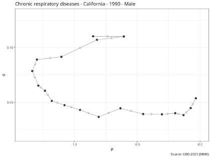
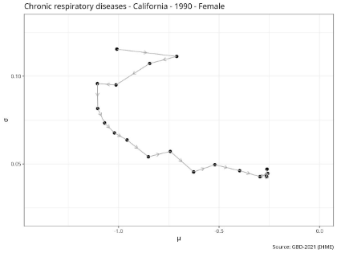
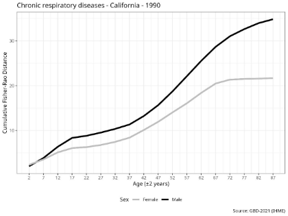

Understanding Sex Differences in Disease Trajectories
A geometry-informed approach to measuring how 10 major chronic conditions evolve as populations age across the US, Western Europe, and Japan.
1 Mapping Aging on a Curved Surface
Instead of plotting these factors on a flat graph, the study models them as dynamical systems embedded in a curved geometric space called the hyperbolic plane. As a population ages, they move across this map, tracing a distinct trajectory. This non-Euclidean geometry is uniquely suited for statistical distributions.


2 Why the Fisher-Rao Distance?
To measure the total "length" of these epidemiological shifts, the study utilizes the Fisher-Rao distance. When tested against alternatives like Kullback-Leibler (KL) divergence, absolute mean differences, and absolute standard deviation differences, the Fisher-Rao metric demonstrated significantly greater cross-regional consistency.

3 Findings Across 10 Chronic Conditions
By comparing the total trajectory lengths between males and females from 1990 to 2019, distinct patterns emerged:
Greater Shifts in Males
Longer trajectory shifts were consistently observed in:
- Neoplasms (Cancers)
- Cardiovascular diseases
- Chronic respiratory diseases
- Diabetes and kidney diseases
- Skin and subcutaneous diseases
- Sense organ diseases
Greater Shifts in Females
Longer trajectory shifts were consistently observed in:
- Neurological disorders
- Mental disorders
- Substance use disorders
Mixed / Variable Patterns
Digestive diseases lacked a uniform sex-based shift globally. They showed no significant sex differences in the United States or Western Europe, but exhibited a male predominance in Japan.
Explore the Methodology
The full data cleaning pipelines and statistical analyses are open-source.
View GitHub Repository